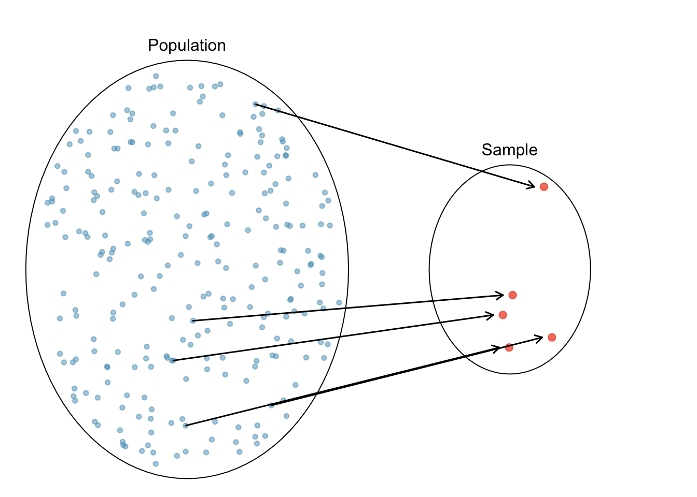

Statistical Inference
Statistics can be divided into two parts: descriptive statistics and inferential statistics. The descriptive statistics part has been discussed in Part Summarizing Data including Chapter 4 and Chapter 5, and many of you probably already learned lots of it in your middle or high school. The core and why statistics is that useful in every part of our life is its inferential techniques.
We have been equipped with sufficient probability tools for learning basic statistical inference. We’ll start with the very basic concept of statistical inference followed by inferential methods for various kinds of data and research questions.
Inferential statistics uses the information contained in the sample data to learn about some unknown target population characteristic of our interest. For example, we are interested in the mean height of the adults in the United States. The budget and/or time constraint, however, keep us from taking the census and knowing the height of every adult in the United States. Instead, we collected a sample data, and hopefully with a fair statistical method, we are able to use the height data in the sample to estimate the mean height of the adults in the United States as precisely as possible.
To be honest, statistical inference is a huge and difficult task. To simply our work, we usually assume the target population follows some distribution but with unknown parameters. Then our goal is to learn or uncover the unknown parameters of the assumed population distribution. For example, we can assume the height of the adults in the United States is normally distributed but with its mean \(\mu\) unknown. Then our goal is to estimate the mean height \(\mu\) from our data set.

Since we only collect a small part of the entire population as our sample, we never see the entire picture and only have partial information, and the conclusion we made based on the sample, with pretty high chance, may be different or even far away from the unknown truth. Also, as we learned in Chapter 11, our sample data vary due to its randomness nature. In statistics, we not only learn what we learn about the unknown parameter, but also learn how uncertain we are about what we learn.
In statistical inference, there are two main approaches in parameter learning: estimation and hypothesis testing. We are going to learn how to estimate and test on the unknown parameters for various types of data and questions. Get ready and let’s go!